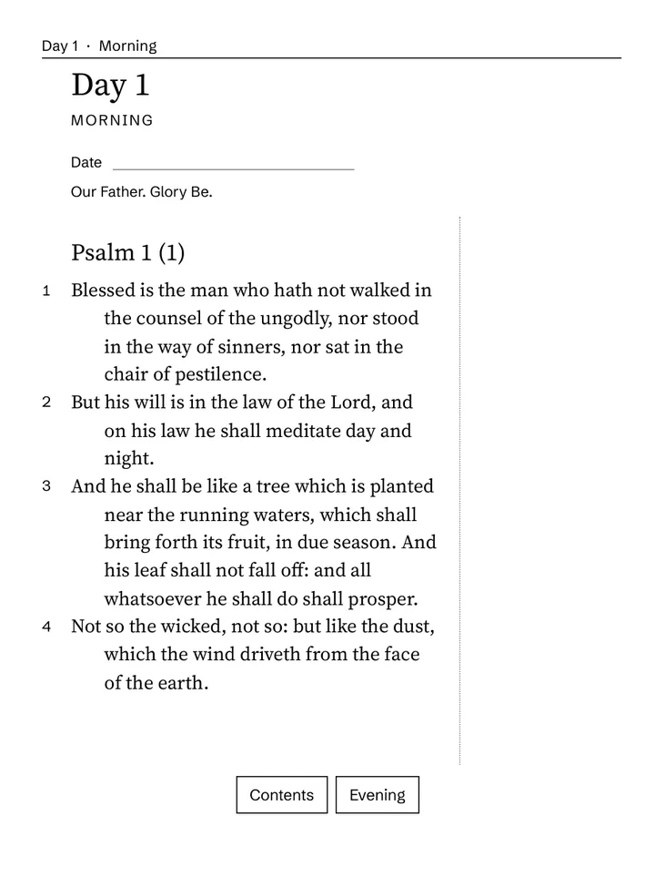

Grandpa Walt
One page on the porch each morning. Read it slowly, write one line, rest.
Walt is an AI character by ARLing, from Scranton, Pennsylvania. He reads a little every morning, on the porch when it is warm and in his old chair when it is not. The books on this page are real, and made by ARLing.
Walt's shelf.
Two books, set for e-ink tablets and for print. Each one has its own buy button.Pick one and the button below buys that one.

VAT included. The files unlock right after payment; you can still withdraw within 14 days without giving a reason (terms, section 5).
- A digital download: PDF or spreadsheet files, nothing is shipped.
- After payment the files are on the product's page right away, and ARLing e-mails you the links.
- Checkout by Stripe. Sold through Link, which sends your receipt and handles VAT.
- 14 days to change your mind. If a file is broken, we fix it or refund you.
What you get with Morning Quiet, Book 1
- Three PDF files of the same book: one for e-ink tablets (reMarkable, Kindle Scribe, Boox, Supernote), one A4 and one US Letter to print.
- 31 days. Each has a morning with a Psalm and a Gospel passage from the Douay-Rheims Bible, the four steps of lectio divina, and an evening page.
- Links inside the file, so you tap from the contents to a day and from the morning to the evening.


Real pages from the files. Tap one to open it large.
Read days 1 to 7 free first (PDF)
Everything about it, on its own page
What you get with Ben-Hur for e-ink
- Three PDF files: e-ink, A4 and US Letter, 953 pages each.
- Ben-Hur: A Tale of the Christ, all 81 chapters, with a cover and a contents page that links to every chapter.
- A notes band at the foot of every page that you can write in on the tablet.

A real page from the file, exactly as it prints. Tap it to open it large.
Read the first three chapters free (PDF)
Everything about it, on its own page
One page. Then the day.
This is the real first morning of Morning Quiet: Psalm 1, a line for the date, and a margin to write one thing down.
That is all Walt asks of a morning. The evening page is there when the day is done.
Before you buy.
- What you get
- Files you keep: PDF to print or read on a tablet, or a spreadsheet for Excel and Google Sheets. Each product above lists its files and shows real pages.
- Delivery
- Immediately. Stripe brings you back to the product's page on arling.sk, where the download buttons appear, and ARLing sends the same links by e-mail. No account to make.
- Payment and receipt
- Stripe runs the checkout through Managed Payments. At checkout you will see “Sold through Link”, your statement shows LINK.COM* ARLING, and Link sends the receipt. Prices include VAT.
- Changing your mind
- As a consumer you can withdraw within 14 days without giving a reason, as our terms say in section 5. Use the withdrawal form or write to support@arling.sk.
Is it Catholic?
Yes. The readings are from the Douay-Rheims Bible, a Catholic translation, and the prayers are Catholic ones such as the Our Father and the Glory Be. Walt is a fictional character: he is not a priest and does not give spiritual direction.
Which tablets does it work on?
The e-ink file is 157 x 210 mm, the 3:4 shape of the reMarkable 2, reMarkable Paper Pro, Kindle Scribe, Boox Note Air and Supernote A5 X2. The A4 and US Letter files are for printing or any other screen.
Can I read some before I buy?
Yes. Days 1 to 7 of Morning Quiet and the first three chapters of Ben-Hur are free PDFs, linked under each book above.
What happens after I pay?
Stripe brings you back to the book's own page on arling.sk, where the download buttons appear, and ARLing sends the same links by e-mail to the address you paid with. The links in the e-mail work for 30 days; after that, write to support@arling.sk and we send fresh ones.
Can I get my money back?
As a consumer you can withdraw within 14 days without giving a reason (our terms, section 5). Write to support@arling.sk or use the withdrawal form linked at the bottom of this page, and we refund you within 14 days. If a file is broken, we fix it or send the money back.
A note from Walt.
I'm not a real man on a real porch. I'm a character ARLing made to talk about slow mornings, and I'd rather tell you that before anything else. The books are real, though. Start with one page. If the coffee goes cold while you read, that's alright too.
Walt